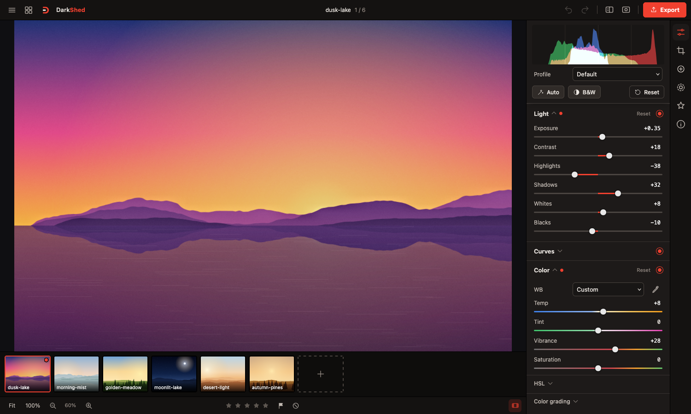
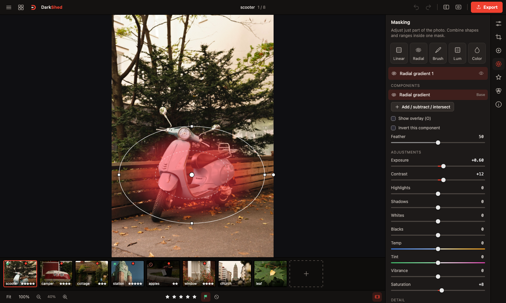
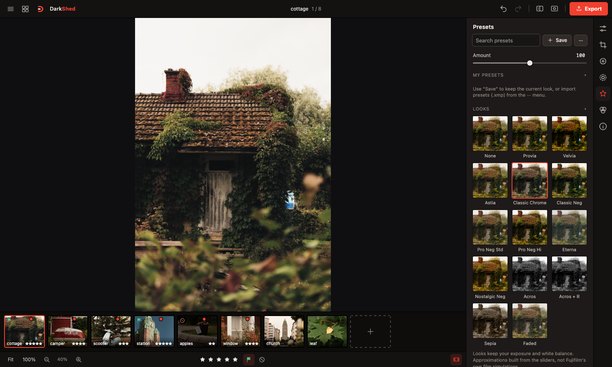
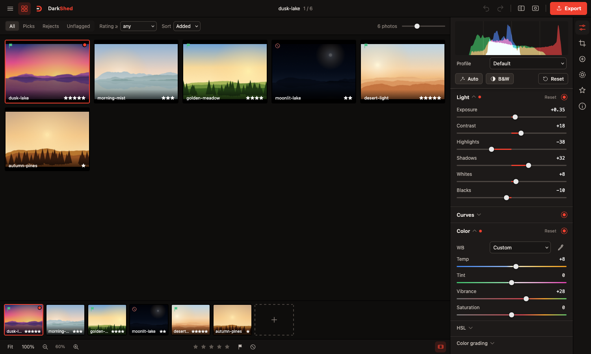
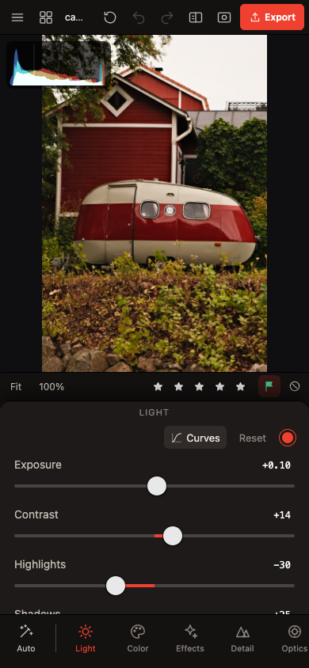
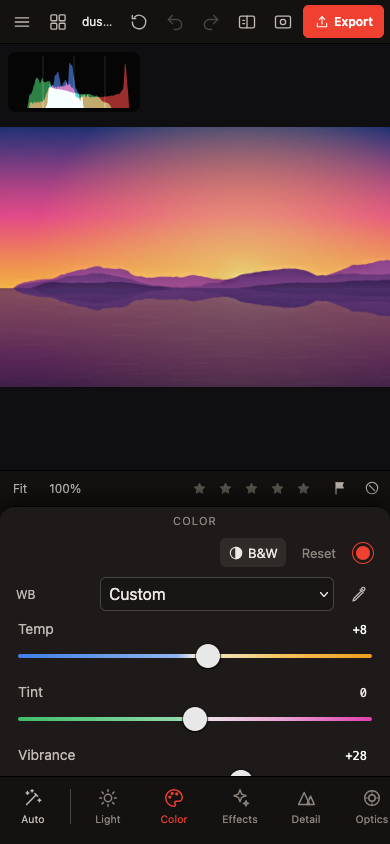
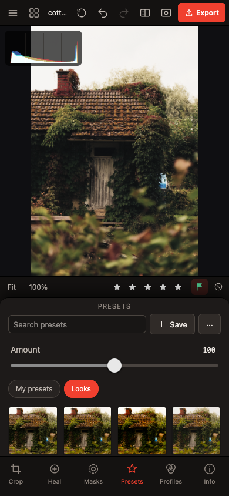
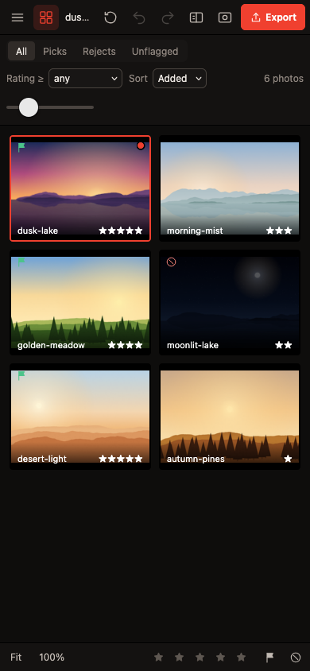

DarkShed
A darkroom, but in a shed.
A free, Lightroom-style RAW and JPEG photo editor that runs in your browser on Mac, Windows, Linux, iPad and iPhone. Your photos never leave your device.
Free and open source (MIT). Beta.

A free Lightroom alternative that runs on what you already own
Private by design
RAW decoding (LibRaw in WebAssembly) and rendering happen on your device's GPU. Photos are never uploaded, not even to your own server.
Every device, one app
A web app for desktop browsers, with a touch layout for iPhone and iPad. Add it to your home screen and it runs full-screen.
Presets that sync
Run it on your computer or a home server and your presets and LUTs sync between all your devices.
No subscription
Free, no account, no ads. You run it yourself.
Features
Full editing panel
Light, curves, white balance, HSL, color grading, effects, detail, optics, B&W and calibration, plus crop and spot healing.
Masks
Linear, radial, brush and range masks, each with its own adjustments.
RAW support
Fujifilm RAF, DNG, CR2/CR3, NEF, ARW and more, plus JPEG, PNG and HEIC. Includes a profile that matches your camera's own JPEG look.
Lightroom presets and LUTs
Import .xmp, .lrtemplate and .zip presets and .cube LUTs. Export your own as .xmp.
Scopes
RGB histogram, or a vectorscope with a skin tone line.
Culling and export
Grid view with ratings and flags. Export to JPEG, PNG, WebP or 16-bit TIFF in sRGB or Display P3, one photo or a batch as ZIP.
Screenshots



On iPhone




Get started
- Download DarkShed for Mac (Apple silicon or Intel), Windows or Linux.
- Unzip it, open READ ME FIRST.txt, then double-click Start DarkShed. Your browser opens the editor.
- On iPhone or iPad, open the address it shows in Safari and tap Share → Add to Home Screen.
Prefer a home server? DarkShed also runs with Docker. See the full install guide.
Support
DarkShed is free, with no ads. If you enjoy it, you can buy me a coffee on Ko-fi.